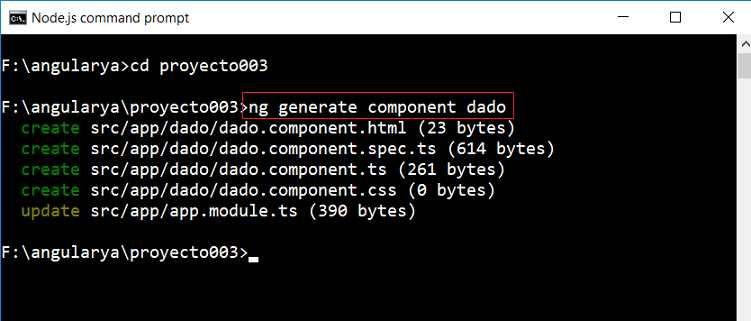
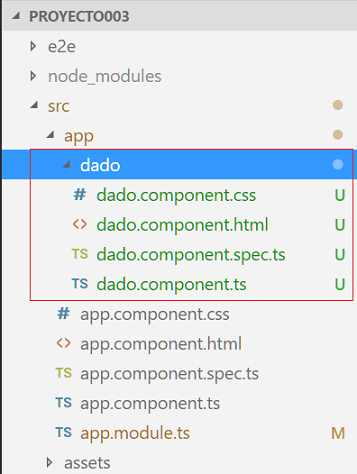
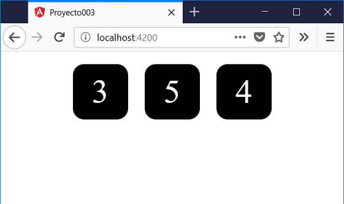

Hasta ahora siempre hemos desarrollado toda la lógica en la componente que se crea por defecto al crear un proyecto con Angular CLI.
La realidad es que en proyectos de mediano y gran tamaño no podemos disponer toda la lógica en una única componente.
Las componentes son una de las características fundamentales de Angular. Ayudan a extender las características básicas de las etiquetas HTML y encapsular código.
Para crear otras componentes la herramienta Angular CLI nos provee la posibilidad de crearlas desde la línea de comandos de Node.js
Implementar una aplicación que muestre tres dados. Crear una componente 'dado' además de la componente que crea por defecto Angular CLI
Seguir los siguientes pasos para implementar el proyecto003:
Desde la línea de comandos de Node.js procedemos a crear el proyecto:
f:\angularya> ng new proyecto003
Primero descendemos a la carpeta proyecto003 y nuevamente desde la línea de comandos procedemos a crear la componente 'dado' escribiendo:
f:\angularya\proyecto003> ng generate component dado
Al ejecutar este comando se crean 4 archivos y se modifica uno:
Además dentro de la carpeta 'app' se crea una carpeta llamada 'dado' y dentro de ella se localizan los cuatro archivos creados:
El archivo que se modifica es 'app.module.ts' donde podemos comprobar que se importa la componente que acabamos de crear:
import { BrowserModule } from '@angular/platform-browser';
import { NgModule } from '@angular/core';
import { AppComponent } from './app.component';
import { DadoComponent } from './dado/dado.component';
@NgModule({
declarations: [
AppComponent,
DadoComponent
],
imports: [
BrowserModule
],
providers: [],
bootstrap: [AppComponent]
})
export class AppModule { }
Es decir que ahora nuestro módulo tiene 2 componentes:
declarations: [
AppComponent,
DadoComponent
],
El nombre de la clase Angular CLI se encarga de finalizarlo con la palabra Component: 'DadoComponent'
En nuestro tercer paso vamos a implementar la vista de la componente 'dado' y su modelo. Abrimos el archivo 'dado.component.ts' y codificamos:
import { Component, OnInit } from '@angular/core';
@Component({
selector: 'app-dado',
templateUrl: './dado.component.html',
styleUrls: ['./dado.component.css']
})
export class DadoComponent implements OnInit {
valor: number=1;
constructor() { }
ngOnInit() {
this.valor = Math.trunc(Math.random() * 6) + 1;
}
}
Codificamos ahora el archivo 'dado.component.html':
<div class="forma">
{{valor}}
</div>
Como podemos ver solo mostramos el valor almacenado en la propiedad 'valor' definido en el modelo.
Para definir la hoja de estilo del 'dado' abrimos el archivo 'dado.component.css' y codificamos:
.forma {
width: 5rem;
height: 5rem;
font-size: 3rem;
color:white;
background-color: black;
border-radius: 1rem;
display: inline-flex;
justify-content: center;
align-items: center;
margin:10px;
}
Finamente nos falta definir tres objetos de nuestra clase 'DadoComponent', si volvemos a ver el archivo 'dado.component.ts' podemos identificar en la llamada a @Component que tiene una propiedad llamada 'selector' con el valor 'app-dado':
@Component({
selector: 'app-dado',
templateUrl: './dado.component.html',
styleUrls: ['./dado.component.css']
})
Este es el selector que debemos utilizar para definir objetos de la clase DadoComponent en las vistas.
Abrimos ahora el archivo 'app.component.html' y remplazamos su contenido con la definición de tres dados:
<div style="text-align:center"> <app-dado></app-dado> <app-dado></app-dado> <app-dado></app-dado> </div>
Si ejecutamos ahora el proyecto:
ng serve -o
Podemos ver que tenemos los tres dados en pantalla:
La división de un proyecto en componentes en Angular nos permite crear piezas independientes y reutilizables.
Siempre debe haber una primer componente donde arranca la aplicación, si utilizamos la herramienta Angular CLI se llama 'AppComponent'. Luego podemos crear otras componentes como en nuestro caso de 'DadoComponent'.
Tenemos que toda componente tiene un nombre de clase, por ejemplo 'DadoComponent' y luego un nombre de selector definida para dicha componente 'app-dado'. En las vistas para definir objetos de una determinada componente debemos hacer referencia al nombre del selector:
<app-dado></app-dado>
La componente 'AppComponent' si vemos su nombre de selector es 'app-root', luego si queremos ver donde se crea un objeto de este tipo de selector debemos abrir el archivo 'index.html' que lo generó automáticamente Angular CLI:
<!doctype html> <html lang="en"> <head> <meta charset="utf-8"> <title>Proyecto003</title> <base href="/"> <meta name="viewport" content="width=device-width, initial-scale=1"> <link rel="icon" type="image/x-icon" href="favicon.ico"> </head> <body> <app-root></app-root> </body> </html>
Como podemos ver en el 'body' se define una etiqueta de tipo 'app-root':
<body> <app-root></app-root> </body>
Gracias a esto siempre se crea un objeto de la clase AppComponent. Si borramos ésta etiqueta y corremos la aplicación luego tendremos una página web vacía.